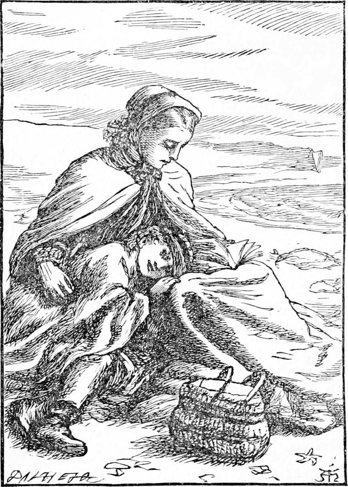

DIAMOND and his mother sat down upon the edge of the rough grass that bordered the sand. The sun was just far enough past its highest not to shine in their eyes when they looked eastward. A sweet little wind blew on their left side, and comforted the mother without letting her know what it was that comforted her. Away before them stretched the sparkling waters of the ocean, every wave of which flashed out its own delight back in the face of the great sun, which looked down from the stillness of its blue house with glorious silent face upon its flashing children. On each hand the shore rounded outwards, forming a little bay. There were no white cliffs here, as further north and south, and the place was rather dreary, but the sky got at them so much the better. Not a house, not a creature was within sight. Dry sand was about their feet, and under them thin wiry grass, that just managed to grow out of the poverty-stricken shore.
“Oh dear!” said Diamond's mother, with a deep sigh, “it's a sad world!”
“Is it?” said Diamond. “I didn't know.”
“How should you know, child? You've been too well taken care of, I trust.”
“Oh yes, I have,” returned Diamond. “I'm sorry! I thought you were taken care of too. I thought my father took care of you. I will ask him about it. I think he must have forgotten.”

“Dear boy!” said his mother, “your father's the best man in the world.”
“So I thought!” returned Diamond with triumph. “I was sure of it!—Well, doesn't he take very good care of you?”
“Yes, yes, he does,” answered his mother, bursting into tears. “But who's to take care of him? And how is he to take care of us if he's got nothing to eat himself?”
“Oh dear!” said Diamond with a gasp; “hasn't he got anything to eat? Oh! I must go home to him.”
“No, no, child. He's not come to that yet. But what's to become of us, I don't know.”
“Are you very hungry, mother? There's the basket. I thought you put something to eat in it.”
“O you darling stupid! I didn't say I was hungry,” returned his mother, smiling through her tears.
“Then I don't understand you at all,” said Diamond. “Do tell me what's the matter.”
“There are people in the world who have nothing to eat, Diamond.”
“Then I suppose they don't stop in it any longer. They—they—what you call—die—don't they?”
“Yes, they do. How would you like that?”
“I don't know. I never tried. But I suppose they go where they get something to eat.”
“Like enough they don't want it,” said his mother, petulantly.
“That's all right then,” said Diamond, thinking I daresay more than he chose to put in words.
“Is it though? Poor boy! how little you know about things! Mr. Coleman's lost all his money, and your father has nothing to do, and we shall have nothing to eat by and by.”
“Are you sure, mother?”
“Sure of what?”
“Sure that we shall have nothing to eat.”
“No, thank Heaven! I'm not sure of it. I hope not.”
“Then I can't understand it, mother. There's a piece of gingerbread in the basket, I know.”
“O you little bird! You have no more sense than a sparrow that picks what it wants, and never thinks of the winter and the frost and, the snow.”
“Ah—yes—I see. But the birds get through the winter, don't they?”
“Some of them fall dead on the ground.”
“They must die some time. They wouldn't like to be birds always. Would you, mother?”
“What a child it is!” thought his mother, but she said nothing.
“Oh! now I remember,” Diamond went on. “Father told me that day I went to Epping Forest with him, that the rose-bushes, and the may-bushes, and the holly-bushes were the bird's barns, for there were the hips, and the haws, and the holly-berries, all ready for the winter.”
“Yes; that's all very true. So you see the birds are provided for. But there are no such barns for you and me, Diamond.”
“Ain't there?”
“No. We've got to work for our bread.”
“Then let's go and work,” said Diamond, getting up.
“It's no use. We've not got anything to do.”
“Then let's wait.”
“Then we shall starve.”
“No. There's the basket. Do you know, mother, I think I shall call that basket the barn.”
“It's not a very big one. And when it's empty—where are we then?”
“At auntie's cupboard,” returned Diamond promptly.
“But we can't eat auntie's things all up and leave her to starve.”
“No, no. We'll go back to father before that. He'll have found a cupboard somewhere by that time.”
“How do you know that?”
“I don't know it. But I haven't got even a cupboard, and I've always had plenty to eat. I've heard you say I had too much, sometimes.”
“But I tell you that's because I've had a cupboard for you, child.”
“And when yours was empty, auntie opened hers.”
“But that can't go on.”
“How do you know? I think there must be a big cupboard somewhere, out of which the little cupboards are filled, you know, mother.”
“Well, I wish I could find the door of that cupboard,” said his mother. But the same moment she stopped, and was silent for a good while. I cannot tell whether Diamond knew what she was thinking, but I think I know. She had heard something at church the day before, which came back upon her—something like this, that she hadn't to eat for tomorrow as well as for to-day; and that what was not wanted couldn't be missed. So, instead of saying anything more, she stretched out her hand for the basket, and she and Diamond had their dinner.
And Diamond did enjoy it. For the drive and the fresh air had made him quite hungry; and he did not, like his mother, trouble himself about what they should dine off that day week. The fact was he had lived so long without any food at all at the back of the north wind, that he knew quite well that food was not essential to existence; that in fact, under certain circumstances, people could live without it well enough.
His mother did not speak much during their dinner. After it was over she helped him to walk about a little, but he was not able for much and soon got tired. He did not get fretful, though. He was too glad of having the sun and the wind again, to fret because he could not run about. He lay down on the dry sand, and his mother covered him with a shawl. She then sat by his side, and took a bit of work from her pocket. But Diamond felt rather sleepy, and turned on his side and gazed sleepily over the sand. A few yards off he saw something fluttering.
“What is that, mother?” he said.
“Only a bit of paper,” she answered.
“It flutters more than a bit of paper would, I think,” said Diamond.
“I'll go and see if you like,” said his mother. “My eyes are none of the best.”
So she rose and went and found that they were both right, for it was a little book, partly buried in the sand. But several of its leaves were clear of the sand, and these the wind kept blowing about in a very flutterful manner. She took it up and brought it to Diamond.
“What is it, mother?” he asked.
“Some nursery rhymes, I think,” she answered.
“I'm too sleepy,” said Diamond. “Do read some of them to me.”
“Yes, I will,” she said, and began one.—“But this is such nonsense!” she said again. “I will try to find a better one.”
She turned the leaves searching, but three times, with sudden puffs, the wind blew the leaves rustling back to the same verses.
“Do read that one,” said Diamond, who seemed to be of the same mind as the wind. “It sounded very nice. I am sure it is a good one.”
So his mother thought it might amuse him, though she couldn't find any sense in it. She never thought he might understand it, although she could not.
Now I do not exactly know what the mother read, but this is what Diamond heard, or thought afterwards that he had heard. He was, however, as I have said, very sleepy. And when he thought he understood the verses he may have been only dreaming better ones. This is how they went—
I know a river whose waters run asleep run run ever singing in the shallows dumb in the hollows sleeping so deep and all the swallows that dip their feathers in the hollows or in the shallows are the merriest swallows of all for the nests they bake with the clay they cake with the water they shake from their wings that rake the water out of the shallows or the hollows will hold together in any weather and so the swallows are the merriest fellows and have the merriest children and are built so narrow like the head of an arrow to cut the air and go just where the nicest water is flowing and the nicest dust is blowing for each so narrow like head of an arrow is only a barrow to carry the mud he makes from the nicest water flowing and the nicest dust that is blowing to build his nest for her he loves best with the nicest cakes which the sunshine bakes all for their merry children all so callow with beaks that follow gaping and hollow wider and wider after their father or after their mother the food-provider who brings them a spider or a worm the poor hider down in the earth so there's no dearth for their beaks as yellow as the buttercups growing beside the flowing of the singing river always and ever growing and blowing for fast as the sheep awake or asleep crop them and crop them they cannot stop them but up they creep and on they go blowing and so with the daisies the little white praises they grow and they blow and they spread out their crown and they praise the sun and when he goes down their praising is done and they fold up their crown and they sleep every one till over the plain he's shining amain and they're at it again praising and praising such low songs raising that no one hears them but the sun who rears them and the sheep that bite them are the quietest sheep awake or asleep with the merriest bleat and the little lambs are the merriest lambs they forget to eat for the frolic in their feet and the lambs and their dams are the whitest sheep with the woolliest wool and the longest wool and the trailingest tails and they shine like snow in the grasses that grow by the singing river that sings for ever and the sheep and the lambs are merry for ever because the river sings and they drink it and the lambs and their dams are quiet and white because of their diet for what they bite is buttercups yellow and daisies white and grass as green as the river can make it with wind as mellow to kiss it and shake it as never was seen but here in the hollows beside the river where all the swallows are merriest of fellows for the nests they make with the clay they cake in the sunshine bake till they are like bone as dry in the wind as a marble stone so firm they bind the grass in the clay that dries in the wind the sweetest wind that blows by the river flowing for ever but never you find whence comes the wind that blows on the hollows and over the shallows where dip the swallows alive it blows the life as it goes awake or asleep into the river that sings as it flows and the life it blows into the sheep awake or asleep with the woolliest wool and the trailingest tails and it never fails gentle and cool to wave the wool and to toss the grass as the lambs and the sheep over it pass and tug and bite with their teeth so white and then with the sweep of their trailing tails smooth it again and it grows amain and amain it grows and the wind as it blows tosses the swallows over the hollows and down on the shallows till every feather doth shake and quiver and all their feathers go all together blowing the life and the joy so rife into the swallows that skim the shallows and have the yellowest children for the wind that blows is the life of the river flowing for ever that washes the grasses still as it passes and feeds the daisies the little white praises and buttercups bonny so golden and sunny with butter and honey that whiten the sheep awake or asleep that nibble and bite and grow whiter than white and merry and quiet on the sweet diet fed by the river and tossed for ever by the wind that tosses the swallow that crosses over the shallows dipping his wings to gather the water and bake the cake that the wind shall make as hard as a bone as dry as a stone it's all in the wind that blows from behind and all in the river that flows for ever and all in the grasses and the white daisies and the merry sheep awake or asleep and the happy swallows skimming the shallows and it's all in the wind that blows from behind.
Here Diamond became aware that his mother had stopped reading.
“Why don't you go on, mother dear?” he asked.
“It's such nonsense!” said his mother. “I believe it would go on for ever.”
“That's just what it did,” said Diamond.
“What did?” she asked.
“Why, the river. That's almost the very tune it used to sing.”
His mother was frightened, for she thought the fever was coming on again. So she did not contradict him.
“Who made that poem?” asked Diamond.
“I don't know,” she answered. “Some silly woman for her children, I suppose—and then thought it good enough to print.”
“She must have been at the back of the north wind some time or other, anyhow,” said Diamond. “She couldn't have got a hold of it anywhere else. That's just how it went.” And he began to chant bits of it here and there; but his mother said nothing for fear of making him, worse; and she was very glad indeed when she saw her brother-in-law jogging along in his little cart. They lifted Diamond in, and got up themselves, and away they went, “home again, home again, home again,” as Diamond sang. But he soon grew quiet, and before they reached Sandwich he was fast asleep and dreaming of the country at the back of the north wind.